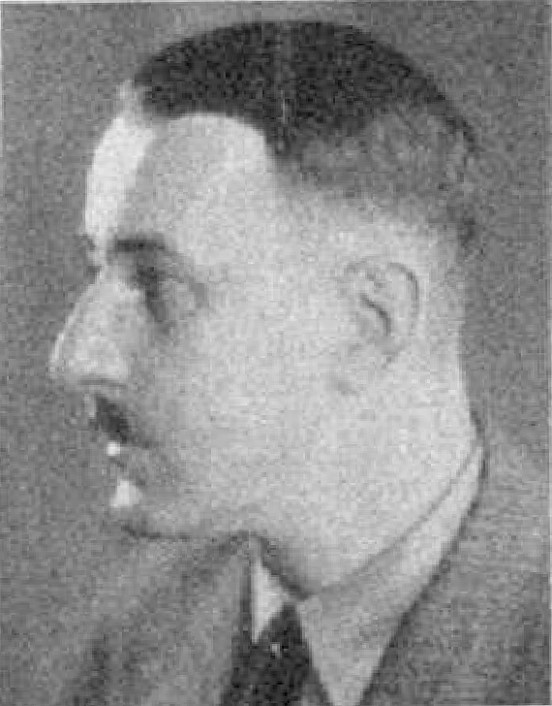

Justiz gegen Hitler: Vorläufiges Meineidsverfahren eröffnet
Münchener Staatsanwaltschaft ermittelt wegen Verletzung der Eidespflicht — Früherer Innenminister als Zeuge vernommen
München, 4. Juli.

Hermann Esser, Staatsminister, leitender Verwaltungsbeamter und (NS-) Funktionsträger in Bayern 1918 bis 1945
Wikimedia Commons
Die Münchener Staatsanwaltschaft hat nun ein vorläufiges Meineidsverfahren gegen den Nationalsozialistenführer Adolf Hitler sowie gegen Hermann Esser eröffnet.[1] Dieser Schritt folgt auf ein Ermittlungsverfahren, das bereits Ende des Jahres 1925 wegen des Verdachts der Verletzung der Eidespflicht eingeleitet worden war.[1]
Wie aus Justizkreisen verlautet, hat der zuständige erste Untersuchungsrichter die Arbeit aufgenommen und bereits mehrere Zeugen in dieser Angelegenheit vernommen.[1] Die Ermittlungen beziehen sich auf Aussagen, die in einem früheren Prozess gemacht wurden. Unter den befragten Personen befindet sich auch eine politisch prominente Persönlichkeit: der ehemalige bayerische Polizei- und Innenminister Dr. Schweyer.[1] In den kommenden Wochen sollen weitere Vernehmungen stattfinden, um den Vorwürfen nachzugehen.[1]
Historische Einordnung
Das Ermittlungsverfahren wegen Meineids gegen Adolf Hitler und Hermann Esser im Jahr 1926 war eines von mehreren juristischen Verfahren, mit denen Hitler während der Weimarer Republik konfrontiert war. Der Vorwurf bezog sich auf widersprüchliche Aussagen in einem Beleidigungsprozess. Die Anklage gegen Hitler wurde im Frühjahr 1927 fallengelassen, während Esser zu einer Geldstrafe verurteilt wurde. Der Vorgang zeigt, dass die Justiz der Weimarer Republik zwar gegen extremistische Agitatoren vorging, die Verfahren jedoch häufig ohne gravierende Konsequenzen für die führenden Köpfe endeten.